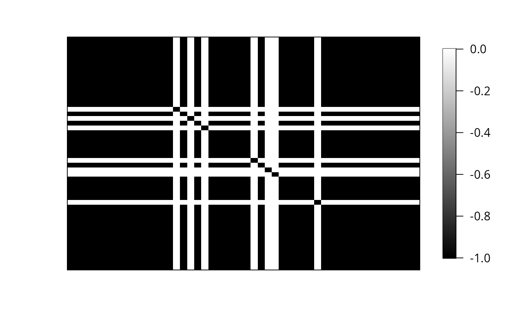

Construct a neighbour-matrix from a graph
graph2matrix.RdConstruct a neighbour-matrix from a graph and disaply it
inla.graph2matrix(graph, ...)
inla.spy(graph, ..., reordering = NULL, factor = 1.0, max.dim = NULL)Arguments
- graph
An
inla.graph-object, a (sparse) symmetric matrix, a filename containing the graph, or a list or collection of characters and/or numbers defining the graph.- reordering
A possible reordering. Typical the one obtained from a
inla-call,result$misc$reordering, or the result ofinla.qreordering.- factor
A scaling of the
inla.graph-object to reduce the size.- max.dim
Maximum dimension of the
inla.graph-object plotted; ifmissing(factor)andmax.dimis set, thenfactoris computed automatically to give the givenmax.dim.- ...
Additional arguments to
inla.read.graph()
Value
inla.graph2matrix returns a sparse symmetric matrix where the non-zero pattern is defined by the graph.
The inla.spy function, plots a binary image of a graph. The reordering argument
is typically the reordering used by inla, found in result$misc$reordering.
See also
inla.read.graph, inla.qreordering
Examples
n = 50
Q = matrix(0, n, n)
idx = sample(1:n, 2*n, replace=TRUE)
Q[idx, idx] = 1
diag(Q) = 1
g = inla.read.graph(Q)
#> 'as(<dsCMatrix>, "dgCMatrix")' is deprecated.
#> Use 'as(., "generalMatrix")' instead.
#> See help("Deprecated") and help("Matrix-deprecated").
QQ = inla.graph2matrix(g)
inla.spy(QQ)


print(all.equal(as.matrix(Q), as.matrix(QQ)))
#> [1] TRUE
g.file = inla.write.graph(g)
inla.dev.new()
inla.spy(g.file)
inla.spy(g.file, reordering = inla.qreordering(g))
#> Error in system(paste(shQuote(inla.call.no.remote()), "-s -m qreordering", "-r", reordering, "-S", "taucs", g.file), intern = TRUE): error in running command
g = inla.read.graph(g.file)
inla.dev.new()
inla.spy(g)
inla.dev.new()
inla.spy(3, 1, "1 2 2 1 1 3 0")
inla.dev.new()
inla.spy(3, 1, "1 2 2 1 1 3 0", reordering = 3:1)